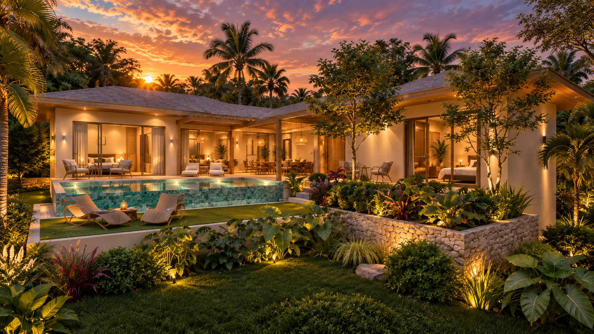

Palm Sea View est implanté sur les hauteurs de Bo Phut, à quelques minutes du village historique, des plages et des commodités du secteur.
Temps de trajet estimés, communiqués par le promoteur (plaquette Palm Sea View).
Temps de trajet estimés communiqués par le promoteur. Susceptibles de varier selon l'itinéraire et la circulation.
Le village de pêcheurs historique de Koh Samui, restauré en une rue animée de restaurants, galeries et marché de nuit, à 7 minutes.
Nichée dans les hauteurs de Bo Phut, la résidence profite d'un panorama dégagé sur la mer, préservé par son implantation en surplomb.
Bo Phut est l'un des quartiers les plus proches de l'aéroport de Koh Samui, à 18 minutes, desservant Bangkok et de nombreuses liaisons régionales.